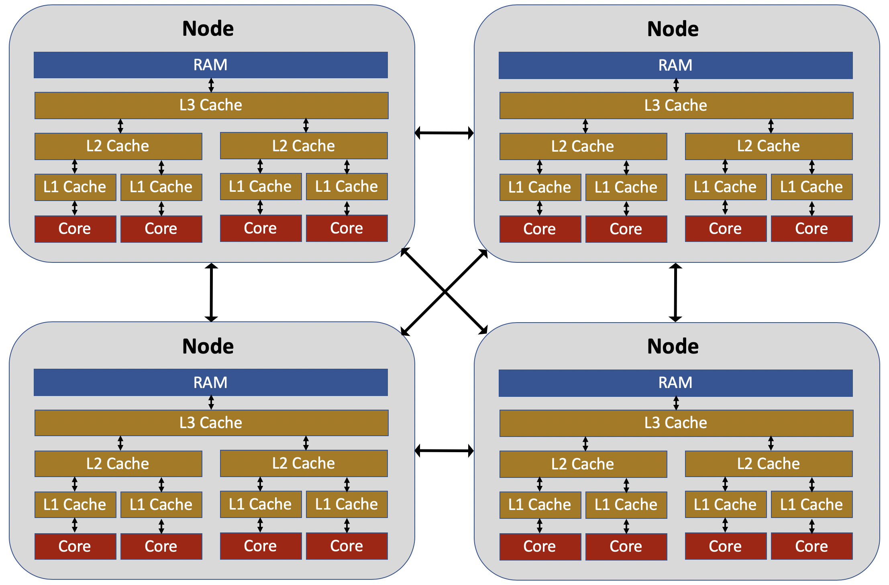

Introduction to Parallelization#
Overview
Questions:
What is parallelization and how does it work?
Objectives:
Understand the motivation for parallelizing code.
Understand how machine architecture affects the ability to parallelize code.
Be aware of the types of parallelization common in computational chemistry.
What is Parallelization?#
At some point in your career, you’ve probably asked the question “How can I make my code run faster?”. Of course, the answer to this question will depend sensitively on your specific situation, but here are a few things you might try doing:
Optimize the code
Move computationally demanding parts of the code from an interpreted language (Python, Ruby, etc.) to a compiled language (C/C++, Julia, Rust, etc.)
Use better theoretical methods that require less computation for the same accuracy Each of the above approaches is intended to reduce the total amount of work required by the computer to run your code.
A different strategy for speeding up codes is parallelization, in which you split the computational work among multiple processing units that labor simultaneously. The “processing units” might include central processing units (CPUs), graphics processing units (GPUs), vector processing units (VPUs), or something similar. Just as multiple construction workers can build a house faster than a single construction worker, multiple processing units can complete a calculation faster than a single processing unit. For example, if a calculation takes 1 hour to run using one CPU, it might be possible to parallelize the work of the calculation across two CPUs and run it in only 30 minutes. Note that parallelization cannot reduce the total amount of computational work required to run a calculation; in fact, it generally introduces additional work associated with communication and coordination between the processing units. In general, if a calculation takes t hours to run in serial (that is, on a single processing unit), it will take at least t/n hours to run on n processing units; this principle is more formally expressed through Amdahl’s law. A primary goal of parallelization is to ensure that the actual parallelized runtimes are as close to the ideal runtime of t/n as possible.
The field of high performance computing (HPC) takes this concept of parallelization to its logical limit. Rather than parallelizing over just a handful of processing units, such as those you might find on a typical desktop or laptop computer, HPC applications involve the use of supercomputers that might consist of many thousands of processing units. Parallelizing codes to such dizzying scales is often very difficult. Although 10 construction workers might be able to build a house 10 times faster than a single construction worker, 1000 construction workers probably cannot build a house 1000 times faster; most of them would just stand around waiting for something to do (unless they are building a very big house or have very good management). Whether building a house or computing molecular properties, managing a very large number of workers can quickly become overwhelming. The purpose of these lessons is to introduce the basic concepts behind parallelization and to call to your attention some essential principles that will help you handle the sometimes chaotic and confusing problem of optimizing the performance of a parallel calculation.
HPC Architecture#
Understanding how to parallelize software requires first having a high-level understanding of the design of the physical machines that run the software. The image below shows a rough overview of some of the elements of a typical supercomputer. The supercomputer consists of a large number of nodes; only four nodes are shown in the picture, but modern supercomputers can have thousands of nodes that are interconnected in a large “cluster.” In some respects, you can think of each node as an independent computer, connected to many other computers within a local network. Each node has a group of “cores,” which are the microprocessors responsible for doing computational work. In the earlier days of computing, all CPUs had a single core; today, nearly all CPUs are multi-core, including those used in desktops and laptops.
The cores within a node share access to the node’s memory (RAM), but do not access the RAM directly. Instead two or three levels of memory “cache” (e.g., the L1 cache, the L2 cache, etc.) exist between the cores and the RAM. The memory cache is both faster (in terms of memory access latency and memory bandwidth) and smaller (in terms of memory capacity) than the RAM, with the L1 cache being the smallest and fastest, followed by the L2 cache, followed by the L3 cache. When a core needs to access information from memory, it first searches the L1 cache. If it does not find the desired information in memory, it then searches the L2 cache, and if the information is found there, it is copied into the L1 cache. If the information is not found in the L2 cache, it then searches the L3 cache, searching RAM only if the information is not in any cache level. The details of this process can be complex, and you won’t become an expert on cache access over the course of these lessons. Nonetheless, it is worthwhile to be aware that the rate at which a core can access information from memory is an important factor that limits the performance and parallelization efficiency of a calculation. When trying to improve the parallelization of a code, it is easy to be hyper-focused on which cores are doing which computational operations, while ignoring the important question “how is the memory for this calculation physically distributed within the node?” In many cases, improving the parallelization efficiency of a code will require making changes to how information is allocated and accessed. One useful tool for assessing the degree to which a calculation is compute bound (i.e., limited by the ability of the cores to perform the required mathematical operations) versus memory bandwidth bound (i.e., limited by the ability of the cores to access the required information from memory) is the roofline model.
When trying to parallelize codes, it is also important to be aware that intra-node parallelization (i.e., parallelization across the cores of a single node) is fundamentally different from inter-node parallelization (i.e., parallelization across the cores of multiple nodes). Cores on the same node can send and receive information between one another much more quickly than cores on different nodes. It is increasingly common for HPC codes to employ entirely different parallelization techniques for intra-node and inter-node parallelization.
Types of Parallelization#
Distributed-memory parallelization. In this approach, multiple instances of the same executable, called “processes,” are run simultaneously, with each process being run on a different core. Each process has its own independent copy of any information required to run the simulation; in other words, if you run a calculation with 2 processes, it might require twice as much memory as a calculation run with a single process (although there are some things you can do to mitigate this).
Shared-memory parallelization. In this approach, multiple “threads” are run using a single, shared memory allocation in RAM. This has the advantage of being more memory efficient than distributed-memory parallelism, but because all threads must have access to the same memory, it cannot be used for inter-node parallelization.
Vectorization. Vectorization takes advantage of that modern CPU cores support “single instruction, multiple data” (SIMD), which means that they can perform the same operation on multiple operands simultaneously. For example, if you want to multiply each element of a vector by a scalar, SIMD can enable individual cores to perform this multiplication on multiple elements of the vector simultaneously. Vectorization is largely handled by the compiler (although there are various ways you can influence when and how the compiler vectorizes code) and is not covered in these lessons.
Heterogeneous computing (e.g. GPUs, FPGAs, etc.). One of the big trends in HPC in recent years is the use of GPU acceleration, in which parts of a calculation are run on a CPU while other parts of the calculation are run on a GPU.
The above forms of parallelization are not mutually exclusive. Codes can benefit from vectorization and GPU-acceleration in addition to other parallelization techniques. Notably, one popular approach to parallelization is to use shared-memory parallelization to handle intra-node parallelization, while using a distributed-memory parallelization technique to handle inter-node parallelization.
These tutorials focus on distributed-memory and shared-memory parallelization. In the next section, we will introduce distributed-memory parallelization, which is also the subject of the hands-on activities in episodes 3 and 4. Shared-memory parallelization will be covered in episodes 5 and 6.
{% include links.md %}
Key Points
Parallelization is essential for achieving good performance on modern computer architectures.
There are many different forms of parallelization. The optimal approach depends on both the type of software problem and the type of hardware available.